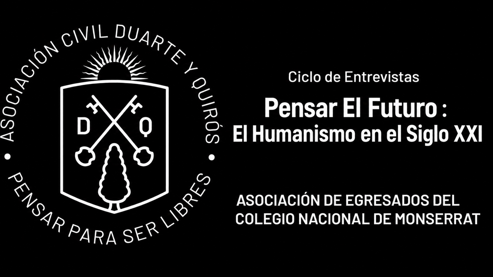
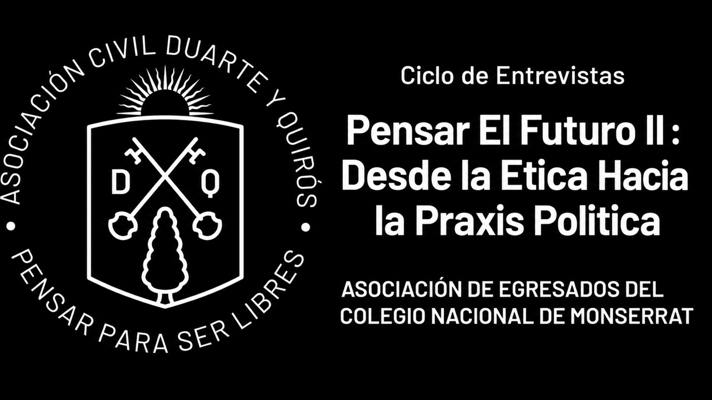

Conferencias, streaming y ciclos culturales para la comunidad de egresados y amigos del Monserrat
Eventos académicos
Series de encuentros en torno a un mismo eje de reflexión.

Busca revitalizar el pensamiento crítico y la creatividad para afrontar los desafíos de nuestro tiempo, acercando a estudiantes y egresados voces que inspiran a imaginar horizontes más amplios.
Oradores: Caballero, Caputo, Canedo, Polakoff y más
Ver ciclo completo →
Es un espacio de diálogo y reflexión que busca abordar los grandes desafíos de nuestro tiempo desde una perspectiva humanista. En esta segunda etapa, la propuesta es avanzar un paso más: preguntarnos cómo los principios que orientan nuestra vida pueden convertirse en decisiones, participación y prácticas capaces de transformar la sociedad.
Oradores: Gattás y Orchansky
Ver ciclo completo →Encuentros
Encuentros con referentes del pensamiento, la historia y la cultura monserratense.
José Tillard
Leer nota →Dr. Ramón Pedro Yanzi Ferreira
Leer nota →
Prudencio Bustos Argañaraz
Leer nota →Lic. Esteban Dómina
Leer nota →
Lic. Inés Achával Becú
Leer nota →Canal Digital
Contenidos audiovisuales para ver cuando quieras, desde donde estés.
Ciclo de Conferencias, Debates y Conciertos
Archivo · Ciclo de Conferencias y Conciertos Corales: Los desafíos del humanismo en el siglo XXI — 2023
Dr. Juan Tirao
Lic. Pablo Canedo
Dr. Luis María Caballero
Ricardo Castro, Enrique Robles y Carlos Del Franco
Dr. Prudencio Bustos Argañaraz
Proponé una charla, un evento o un proyecto cultural para la comunidad monserratense.